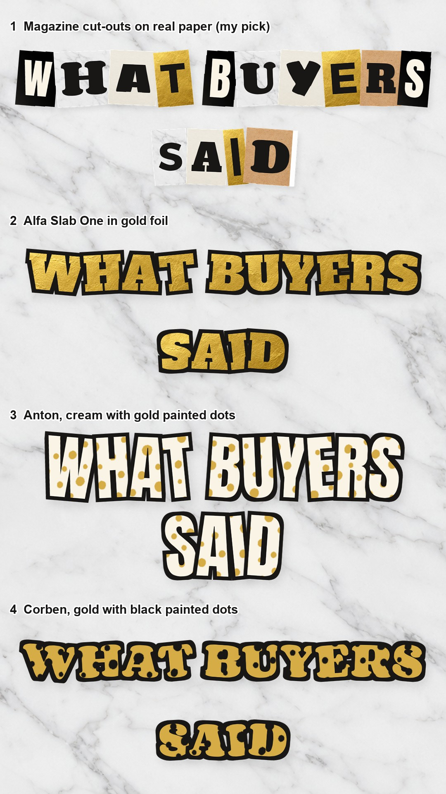

Rough renders to show the motion as a living collage: tiles that slide, flip, peel and swap, real cut-outs across the seams, every transition, the doodles drawing on. The footage is
a stand-in from your July clips; buyers drop in their own. Notes reach Claude as you type. #11 is now modern and not seasonal (no fall images, no washes or dotted letters, no outlines); both mix full-frame video with accents, full-screen words and one collage moment.
#11 A day with it
What happens, in order:
morning, full frame: A DAY WITH MY [PRODUCT] pops in; accents: the small brass clock at 7, the time, a burst
the clock hand sweeps round and wipes to a full-screen word (no video): NOON on concrete
the camera dives through the O of NOON into the midday clip; accents: clock at 12, time, sparkle
zoom out to the clock wheel of four clips (the one collage moment); the hand moves to 4; dive into that slice
afternoon, full frame + accents; the hand wipes to a full-screen NIGHT on dark concrete
night, full frame + accents
CTA: the resting product fills the clock face, COMMENT "[KEYWORD]"
#20 What buyers said
What happens, in order:
full frame: five gold stars stick on, WHAT BUYERS SAID, a gold seal rolls into the corner
review one: the buyer's screenshot in a real phone slides in beside the clip
a few big stars sweep across to a full-screen word beat (no video): IN THEIR WORDS on marble, gold paint under it
a stroke of gold paint wipes to review two, full frame, the phone on the other side
the camera dives into the phone screen: it becomes the third clip; a hand brings the third phone
the CTA is the collage moment: the clip becomes a tile, the tiles slide in; a trophy, a gem, a gold seal
Lettering options (the video uses option 1). Pick a number:

#10 Three people to gift it to (new)
What happens, in order:
gift-ready, full frame: "gift this to 3 PEOPLE" (Anton filled with real kraft paper); a kraft gift and twine as accents
"1" pops onto a real gift tag and the camera dives into the tag: it becomes person one
person one, full frame + accents: the big 1, FOR YOUR [friend who's always cold], a blush tag
collage moment: the clip shrinks to a tile, tiles slide in, one flips to person two and swaps big
person two + accents; then full-screen words (no video): "and one more" / a huge 3 on oak
a real kraft paper roll sweeps across to person three
CTA collage: the gift wrap clip, three different gifts across the seam, COMMENT, the keyword on a tag
#23 Every option in 10 seconds (new)
What happens, in order:
full-screen words (no video): the real paint-chip fan deck fans open, "every [colour] in 10 SECONDS"
the fan opening is the wipe into option 1
eight options, one second each, full frame: its own real chip, [OPTION N], 1/8
the changes alternate: a giant real paint chip sweeps across / the fan opens
CTA collage: all eight playing together as tiles, chips across the seams, the oak shelf, COMMENT, ALL [8] AT [SHOP]
#22 Put it to the test (new)
What happens, in order:
the setup, full frame: "does it really [STAY DRY]?"; a real stopwatch and test tubes as accents
full-screen words (no video): let's TEST IT over a real water splash; the splash sweeps across to the test
the test in ONE uncut take (the pack rule), the stopwatch ticking, the seconds counting, [THE CLAIM]
full-screen words: and the RESULT; a clock-hand wipe to the result
the result + accents: a big tick, [WHAT HAPPENED]
CTA collage: the product in use, splash + blue tiles, test tubes, beaker, stopwatch across the seam